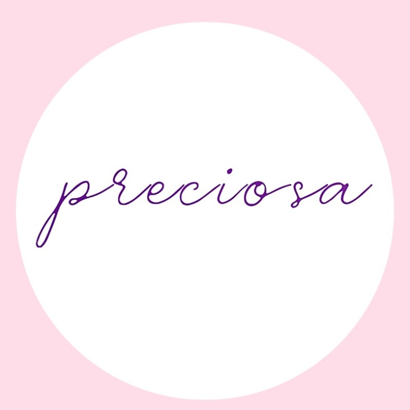
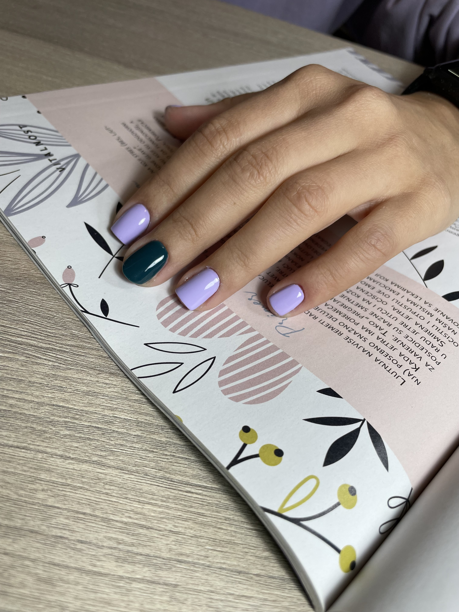
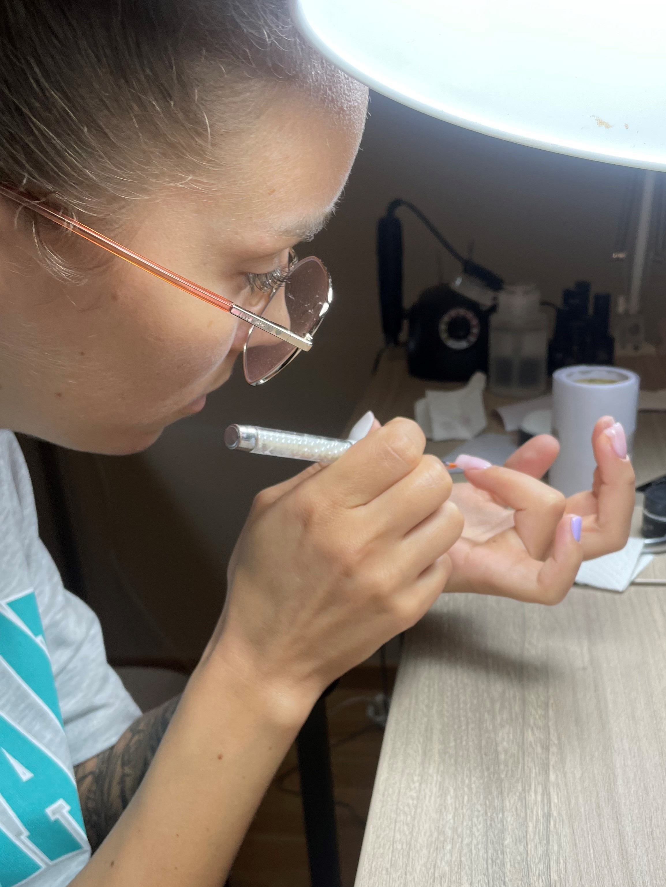
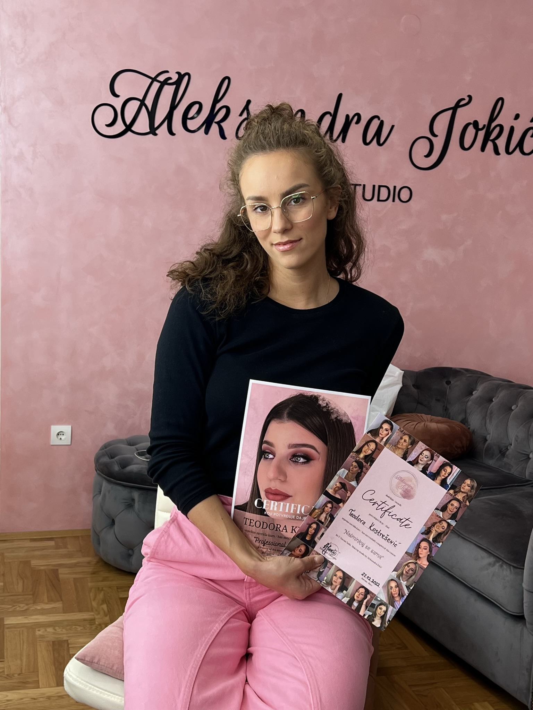
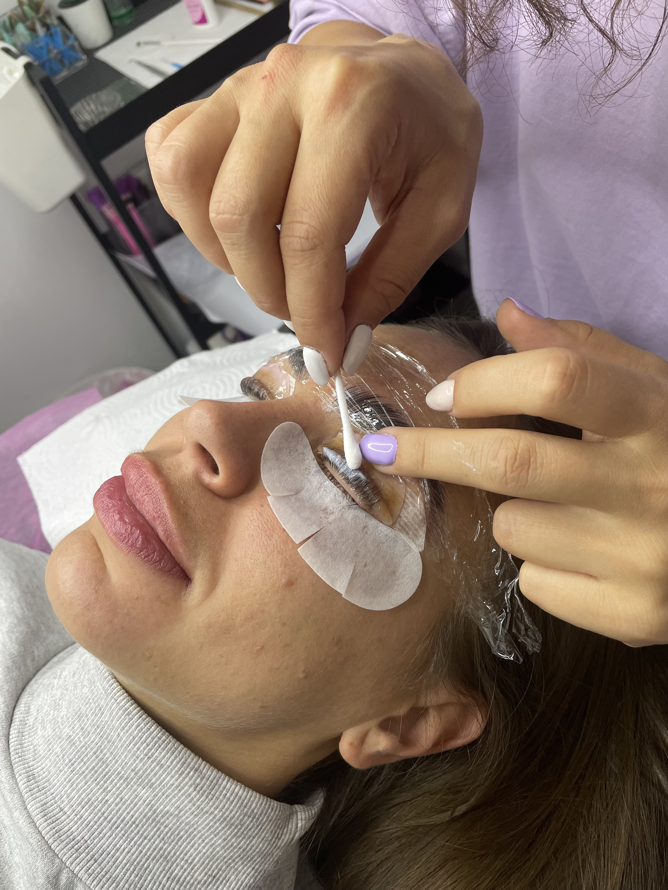
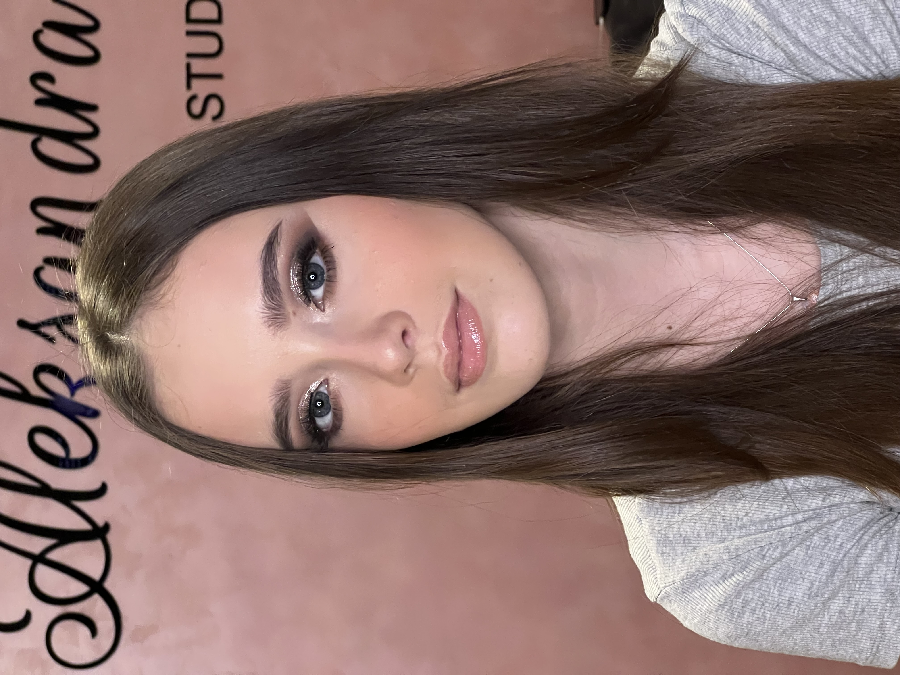

Kozmetički salon "Preciosa"

Dobrodošli u salon kozmetičkih usluga „Preciosa“
Nalazimo se na atraktivnoj lokaciji u Novom Sadu, na adresi Tone Hadžića 3.
Cilj i potreba našeg rada je da Vama obezbedimo
jedinstven ugođaj u prijatnoj u opuštenoj atmosferi našeg salona.
Kontaktirajte nas pomoću mejl adrese: preciosans2022@gmail.com
Usluge koje pružamo u salonu:
Aparatni manikir

Ova vrsta manikira postala je veoma popularna u salonima širom Srbije, a evo o čemu se zapravo radi.
I klasični i aparatni manikir imaju isti postupak izrade, ali se prilikom izrade klasičnog manikira za potiskivanje i uklanjanje
suve kože koriste pogurivač zanoktica i makazice, dok se kod aparatnog manikira koriste različiti nastavci za električnu turpiju.
Uz pomoć nastavaka za aparatni manikir suva koža kutikule i zanoktice se uklanjaju veoma brzo i precizno, a zdrava koža ostaje netaknuta.
Nokat se polira i dobija visoki sjaj. Usluga manikira je znatno ubrzana ovom tehnikom.
Aparatni pedikir
Aparaturni pedikir je nova dimenzija izvođenja estetskog i medicinskog pedikira. Pravi izbor za klijente koji imaju probleme sa stopalima, kao što su žuljevi, kurije oko, hiperkeratoza, urastao nokat, „kandžasti“ nokti, gljivice…
Zahvaljujući velikom broju različitih borera i nastavaka koji su napravljeni od medicinskih materijala uspešno se mogu rešiti problemi sa zadebljanjem kože i noktiju, mogu se obrađivati i žuljevi i kurije oko. Aparat omogućava veliku preciznost pri obavljanju procedura, jednostavan i brz rad, bez krvarenja.
Gel lak tehnika
Gel lak je novija tehnika koja je postala popularna pre par godina. Gel lak ili trajni lak je ustvari hibridni lak. Namenjen je svim pripadnicama lepšeg pola koje žele da imaju svoje prirodne nokte u nekoj boji. Takođe je i jednostavan da ga same uradite kod kuće.

Lash lift
Lash lift je tehnika podizanja vaših prirodnih trepavica. U toku rada dolazimo do hemijskog uvijanja i bojenja uz pomoć određenog pribora i materijala kao što su razne vrste jastučića, četkica i baza.
Postoje četiri vrste baza koje nanosimo. Prva i druga baza su vezane za učvršćivanje i podizanje trepavica, treća baza je keratin koja neguje i dubinski hrani vaše trepavice, a poslednjabfaza nam pomaže da uklonimo ostatke lepka. Ceo postupak ima za cilj ojačavanje i podizanje trepavice bez ikakvih ekstenzija.
Brow lift
Brow lift ili brow lamination je savršen tretman za one koji žele lepe i sređene obrve ali ne žele trajnu šminku na obrvama. Brow lift je proces oblikovanja dlačica obrva kako bi one ostale u željenom obliku. Prirodan izgled, guste i lepo oblikovane obrve i sve to uz tretman koji traje samo sat vremena, a vaše obrve ostaju sređene narednih 3-5 nedelja.
Brow lift podrazumeva lifting i bojenje obrva hipoalergenim serumom dlačicu po dlačicu. Efekat koji dobijamo sličan je microblading-u ali naglašavamo da ovo nije trajna šminka.
Depilacija šećernom pastom
Jedna od razlika između šećerne paste i voska je ta što se pasta ne lepi za kožu, već se vezuje za dlake. I samim tim depilacija je znatno prijatnija i bezbolnija. Pasta obavija folikul i samu dlaku pa samim tim dolazi do pravilnog čupanja dlake, proređivanje rasta novih i znatno smanjuje mogućnost uraslih dlaka jer se radi i blagi piling kože. Najveća prednost šećerne paste je sama tehnika uklanjanja dlaka, koja se vrši u smeru rasta dlake, u njenom najranijem stadijumu rasta gde je dužina dlačice tek 2mm.
Profesionalno šminkanje
Profesionalno šminkanje je dekorativni tretman lica tokom kojeg profesionalni šminker ulepšava vaše lice kroz nekoliko koraka, koristeći različita dekorativna sredstva i proizvode prilagođene tipu kože i služeći se priborom za šminkanje.
Profesionalni šminker je osoba stručno obučena za to zanimanje, koja poseduje sertifikat, odnosno, dokaz o uspešno savladanim tehnikama šminkanja.



O preduzetnici
U salonu Preciosa ce Vas dočekati Teodora, sa srdacnim osmehom na licu!
Od nje možete da očekujete profesionalnost na najvisem nivou kada su u pitanje kozmeticke usluge koje su u ponudi u salonu Preciosa!